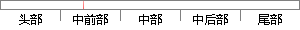

点击该用户收藏的歌单的某个歌单即可进入该用户收藏的某个歌单的页面，并可以播放收藏的歌单。
片段位置图

相似结果|
相似片段 1：业内增长最快的音乐应用，它十分重视互联网带来的社交15功能，其中尤其以用户自主创建的大量高质量歌单而最为人津津乐道。歌单是用户根据某个主题，组织的一份音乐清单，其中点击量和收藏量靠前的会被保留置顶推荐
|
※ 片段修改建议 ※
近似词参考：- 收藏：保藏 珍藏
- 即可：便可
- 收藏：保藏 珍藏
- 收藏：保藏 珍藏
系统自动生成语句：点击该用户保藏的歌单的某个歌单便可进入该用户保藏的某个歌单的页面，并可以播放保藏的歌单。
注：本片段修改建议为系统自动生成，仅供参考。